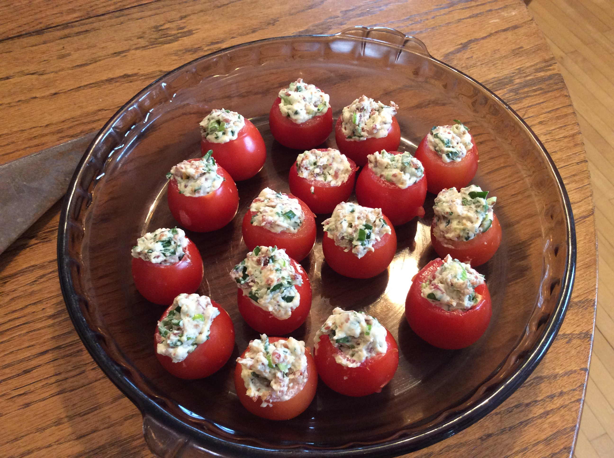

Baby BLT (page info from https://www.allrecipes.com/recipe/39643/baby-blt/)

Tomatoes filled with flavor!
Cherry tomatoes stuffed with a mixture of bacon, green onion, and mayonnaise.
These BLT stuffed tomatoes may be a little time-consuming, but they are worth
it to the last bite!
Ingredients
- 1 pound bacon, cooked and crumbled
- 1/2 cup mayonnaise
- 1/4 cup green onions, chopped
- 2 tablespoons chopped fresh parsley
- 24 cherry tomatoes
Steps
- Place bacon in a large, deep skillet. Cook over medium-high heat for 6
to 8 minutes, or until evenly brown. Once cooled, crumble and set aside.
- In a bowl, stir together mayonnaise, bacon, green onions, and parsley
until well blended. Set aside.
- Cut a small slice from the top of each tomato. Using a melon baller or
small spoon, scoop out the inside of each tomato and discard. Fill each
tomato with the bacon mixture, and refrigerate for 1 hour. Serve chilled.